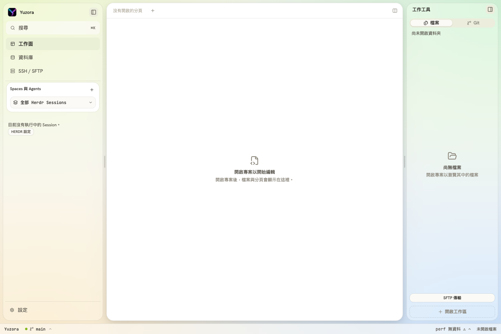
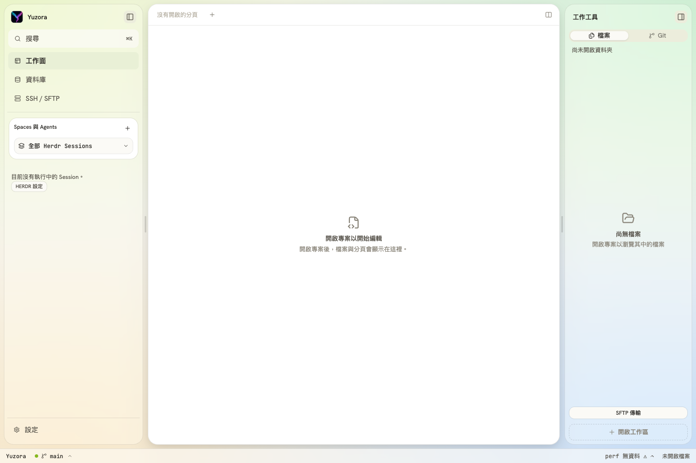
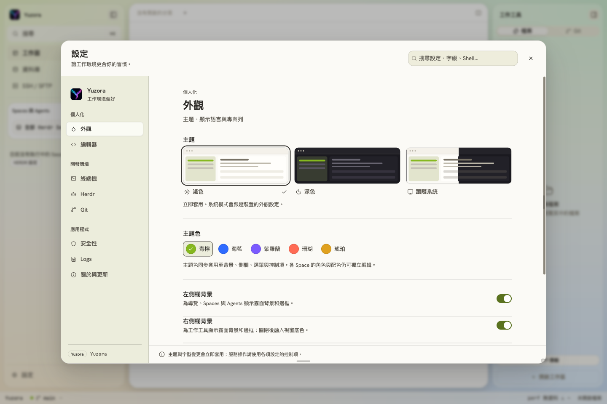
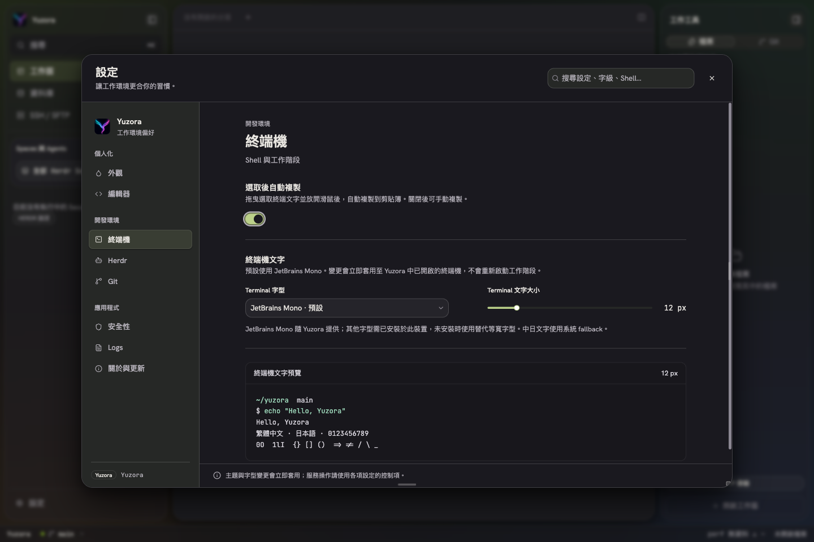
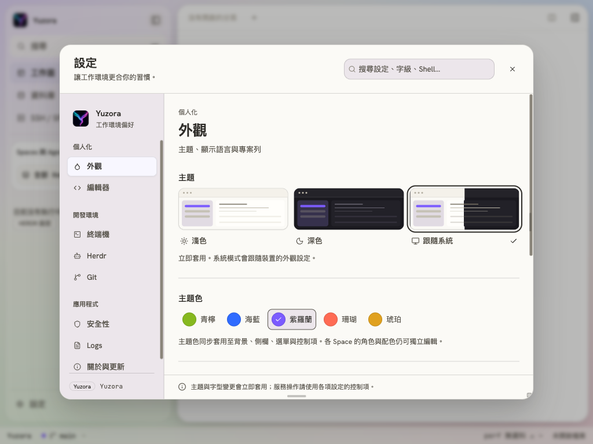

Yuzora · 2026-09-10
側邊欄留白、主題色勾選與 Switch 對齊
四項修正完成；瀏覽器互動驗證、11 項相關測試、型別檢查、建置與元件 lint 通過。
| 項目 | 原因與修正 | 畫面量測 |
|---|---|---|
| Herdr 卡片上方留白 | 卡片與上方分隔線過近；上方 margin 由 4px 增加至 12px。 | 增加 8px。 |
| 右側欄頂部對齊 | 右側 chrome 比左側少 8px；增加標題列高度與頂部 padding，同步調整展開狀態的收合按鈕。 | 左右內容起點皆為 y=61px，按鈕皆為 y=21px。 |
| 主題色勾選置中 | RadioGroupItem 的自訂 SVG 缺少水平置中；色票以 inline-flex 置中。 | 五種色票在淺、深色模式的水平與垂直中心誤差皆為 0px。 |
| Switch 只移至中間 | 軌道使用 px，滑塊使用 rem；全域 13px 字級將滑塊縮小。預設與 small 滑塊改用 16px／12px，與既有固定尺寸軌道一致。 | 預設開關右端留白由 7px 修正為 1px，與關閉時左端 1px 一致；既有 yz-switch 仍維持兩端各 2px。 |
驗證範圍
Playwright Chromium 開啟現有 Vite 頁面，透過真實 UI 點選色票、切換淺深色主題、點擊自訂 Switch，並以 Space 鍵切換終端機 Switch。檢查 1440×960、1024×768、減少動態效果及側欄收合／展開；小視窗依既有規則一次展開一側。
bun run test src/app/AppShell.layout.test.tsx src/app/workbench/settingsPrimitives.test.tsx：2 檔、11 項通過。bun run build 通過，包含型別檢查；保留既有 bundle 大小與 remotePreviewUrl 靜態／動態 import 提示。Switch 元件 eslint 與本次檔案 diff whitespace 檢查通過。
本次 E2E 驗證範圍為瀏覽器前端，未驗證原生 Tauri WebView 或 SSH／WSL 後端。純瀏覽器因缺少 Tauri IPC 的既有初始化錯誤仍存在，未視為本次修正的後端驗證結果。窄視窗腳本初次遇到自動收合與退出動畫中的媒體偏好切換，重新載入並按既有響應式行為檢查後通過。
修正前後





變更檔案
src/app/workbench/space-agent-sidebar.csssrc/app/workbench/workbench-shell.csssrc/app/workbench/settings-modern.csssrc/components/ui/switch.tsx
沿用既有 shadcn 元件，未新增 UI primitive。保留工作目錄其他變更；沒有 staging、commit 或 push。